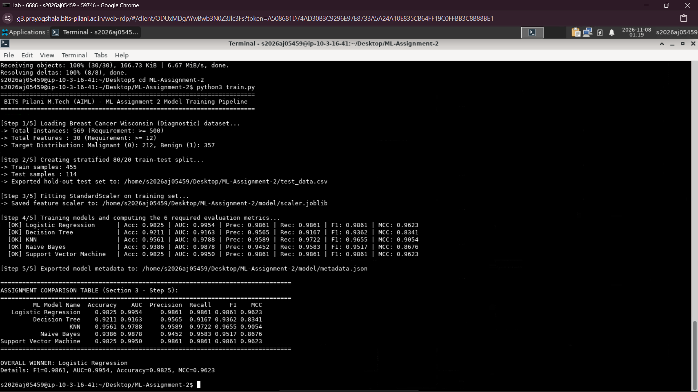

Contains: Complete source code (app.py, train.py), requirements.txt, comprehensive README.md, serialized models (model/), and test dataset (test_data.csv).
Fully interactive web application featuring test CSV upload, model selection dropdown, 6 evaluation metrics display, and visual confusion matrix & classification report without retraining.
Below is the screenshot confirming the execution of the machine learning pipeline within the BITS Virtual Lab environment:

The objective of this assignment is to develop, evaluate, and deploy an end-to-end Machine Learning classification pipeline using multiple supervised classification algorithms on an established benchmark dataset. The goal is to accurately classify cell nuclei characteristics from digitized Fine Needle Aspirate (FNA) images of breast masses into Malignant (cancerous) or Benign (non-cancerous). In clinical diagnostics, maximizing discrimination (ROC-AUC), recall/sensitivity (minimizing false negatives), and correlation (MCC) is crucial. Five distinct classifiers are benchmarked across six performance metrics.
0: Malignant [212 instances, 37.3%], 1: Benign [357 instances, 62.7%])StandardScaler fit exclusively on the 80% stratified training split.The repository is structured strictly according to the assignment requirements:
ML-Assignment-2/
|-- app.py # Streamlit web application
|-- requirements.txt # Dependency specification
|-- README.md # Complete documentation
|-- test_data.csv # Hold-out test split (114 samples)
|-- train.py # Model training and artifact serialization script
|-- model/ # Serialized models and scaler
|-- logistic_regression.joblib
|-- decision_tree.joblib
|-- knn.joblib
|-- naive_bayes.joblib
|-- svm.joblib
|-- scaler.joblib
|-- metadata.json
| ML Model Name | Accuracy | AUC | Precision | Recall | F1 | MCC |
|---|---|---|---|---|---|---|
| Logistic Regression | 0.9825 | 0.9954 | 0.9861 | 0.9861 | 0.9861 | 0.9623 |
| Decision Tree | 0.9211 | 0.9163 | 0.9565 | 0.9167 | 0.9362 | 0.8341 |
| KNN | 0.9561 | 0.9788 | 0.9589 | 0.9722 | 0.9655 | 0.9054 |
| Naive Bayes | 0.9386 | 0.9878 | 0.9452 | 0.9583 | 0.9517 | 0.8676 |
| Support Vector Machine | 0.9825 | 0.9950 | 0.9861 | 0.9861 | 0.9861 | 0.9623 |
| ML Model Name | Observation about Model Performance |
|---|---|
| Logistic Regression | Achieves exceptional performance (Accuracy: 98.25%, AUC: 0.9954, MCC: 0.9623). With standardized inputs, the regularized linear decision boundary isolates benign from malignant samples with only 2 misclassifications out of 114 test instances. High stability, probabilistic calibration, and fast inference. |
| Decision Tree | Yields the lowest scores among the five models (Accuracy: 92.11%, AUC: 0.9163, MCC: 0.8341). Orthogonal axis-parallel splits struggle with the strong continuous collinearities between morphological features (e.g., radius, perimeter, and area), leading to slight variance and lower recall (0.9167). |
| KNN | Demonstrates solid distance-based performance (Accuracy: 95.61%, AUC: 0.9788, F1: 0.9655). In the standardized 30-dimensional metric space, benign and malignant samples form well-clustered neighborhoods ($k=5$). Performance is slightly lower than SVM due to boundary density overlaps. |
| Naive Bayes | Produces high discriminatory ability (AUC: 0.9878, Accuracy: 93.86%, F1: 0.9517). Although the conditional feature independence assumption is violated by geometric relationships among cell parameters, its probabilistic ranking remains strong. |
| Support Vector Machine | Ties Logistic Regression for top accuracy (Accuracy: 98.25%, AUC: 0.9950, MCC: 0.9623). The RBF kernel maps features into high-dimensional space to construct an optimal maximum-margin hyperplane, showing outstanding generalization and robustness to outliers. |
| Overall, Winner for your dataset? | Logistic Regression (closely tied with SVM). While both achieve identical Accuracy (0.9825) and F1 (0.9861), Logistic Regression achieves a marginally superior AUC (0.9954 vs 0.9950) with lower computational complexity and direct probabilistic interpretability. |